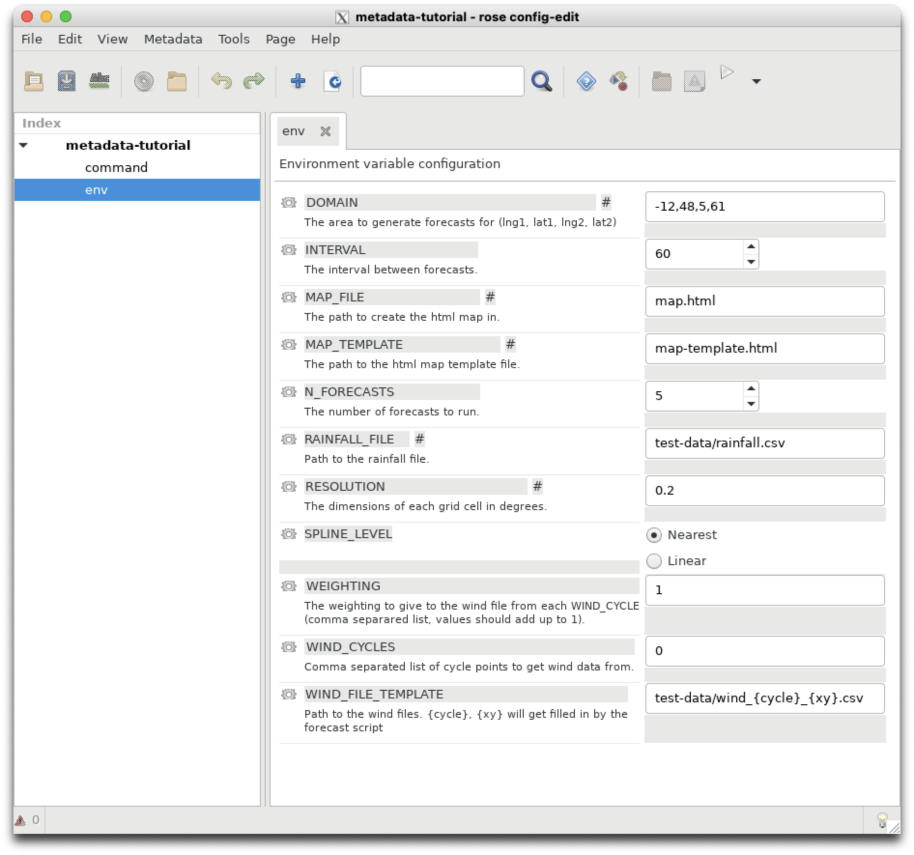

First Rose tutorial#
Now we will construct our first rose suite to learn how rose uses configuration files to pass parameters (typically bash environment variables or fortan namelists) to tasks controlled by cylc.
A rose “application” is a rose configuration which executes a defined command.
Let’s run through the exercises available here:
https://metomi.github.io/rose/2019.01.8/html/tutorial/rose/applications.html
Once your rose application has been complete, you should be able to execute it and generate outputs similar to those below.
$ rose app-run -C ../
[INFO] export CYLC_TASK_CYCLE_POINT=20171101T0000Z
[INFO] export DOMAIN=-12,48,5,61
[INFO] export INTERVAL=60
[INFO] export MAP_FILE=map.html
[INFO] export MAP_TEMPLATE=map-template.html
[INFO] export N_FORECASTS=5
[INFO] export PATH=/home/548/pag548/rose-tutorial/application-tutorial/bin:/g/data/hr22/apps/cylc7/rose_2019.01.7/bin:/g/data/hr22/apps/cylc7/23.09/bin:/g/data/hr22/apps/mosrs-setup/1.0.1/bin:/home/548/pag548/.local/bin:/home/548/pag548/bin:/opt/pbs/default/bin:/opt/nci/bin:/opt/bin:/opt/Modules/v4.3.0/bin:/bin:/usr/bin:/usr/local/sbin:/usr/sbin:/opt/pbs/default/bin
[INFO] export RAINFALL_FILE=test-data/rainfall.csv
[INFO] export RESOLUTION=0.2
[INFO] export WEIGHTING=1
[INFO] export WIND_CYCLES=0
[INFO] export WIND_FILE_TEMPLATE=test-data/wind_{cycle}_{xy}.csv
[INFO] install: map-template.html
[INFO] source: /home/548/pag548/rose-tutorial/application-tutorial/file/map-template.html
[INFO] create: test-data
[INFO] install: test-data
[INFO] source: /home/548/pag548/rose-tutorial/application-tutorial/file/test-data
[INFO] command: forecast $INTERVAL $N_FORECASTS
Plotting diasbled
If you plot the file ~/rose-tutorial/application-tutorial/run/map.html it should resemble this:

Second Rose tutorial#
In the next rose tutorial you will learn how to add metadata to a rose suite. Metadata has a variety of uses in a rose suite. Follow the exercises located below to find out what they are.
https://metomi.github.io/rose/2019.01.8/html/tutorial/rose/metadata.html
NOTE In this tutorial the command
rose config-edit &is used to edit the rose suite. In most of the 21st Century Weather and ACCESS-NRI documentation, the short-cutrose edit &is used instead.
At the conclusion of this tutorial, your rose edit window should look like this.

Third Rose tutorial#
In this tutorial you will bring all of your knowledge of rose and cylc together to start, stop and restart a fully integrated rose/cylc suite.
You will learn how to control the overall configuration of a rose/cylc suite using the rose-suit.conf file.
Follow the exercises contained in this link:
https://metomi.github.io/rose/2019.01.8/html/tutorial/rose/suites.html
NOTE This exercise refers to
Jinja2. Jinja is a templating language, i.e. a way to create extensive ASCII (text) documents by using a logic to loop over variables or parameters to prevent repetitive typing of repeated strings or text. The homepage for the Jinja project is here:https://jinja.palletsprojects.com/en/stable/
There is short review of how
Jinjaworks here : https://metomi.github.io/rose/2019.01.8/html/tutorial/cylc/runtime/configuration-consolidation/jinja2.html. You don’t have to do the tutorials, but just be conscious that whenever you see braces such as{{ }}in asuite.rcfile, those braces surround a variable that will be replaced with Jinja. Likewise, Jinja logic such as{% if ... %}or{% for ... }within thesuite.rcwill be processed to produce the finalsuite.rc.processedfile which is the actual file executed bycylcwhich is created in your~/cylc-run/<rose-id>directory. In conclusion, Jinja is a way for us to create very longsuite.rcfiles by looping over input parameters.
I had to make the following changes to suite.rc to make the tutorial work.
[jinja2:suite.rc]
station="camborne", "heathrow", "shetland", "aldergrove","belmullet"
Otherwise the suite will not run It will fail will the following errors:
[INFO] install: suite.rc
[INFO] REGISTERED rose-suite-tutorial -> /home/548/pag548/cylc-run/rose-suite-tutorial
[FAIL] cylc validate -o /scratch/gb02/pag548/tmp/tmp45a3jD --strict rose-suite-tutorial # return-code=1, stderr=
[FAIL] ERROR, parameter station out of range: station=belmullet
I tracked down the error using the bash command grep which searches for strings in ASCII (text) files.
$ grep belmullet *
grep: app: Is a directory
grep: bin: Is a directory
grep: lib: Is a directory
grep: meta: Is a directory
suite.rc: [[get_observations<station=belmullet>]]
This told me that one of the tasks in suite.rc expects a station value of belmullet. So I added it to the list of station variables defined in rose-app.conf. Another solution would be to remove the task [[get_observations<station=belmullet>]] from the suite.rc file.
To check the suite has been installed correctly, your ~/cylc-run/rose-suite-tutorial/ directory should contain the following:
$ ls ~/cylc-run/rose-suite-tutorial/
app bin lib log meta share suite.rc work
Note the suite.rc file installed in your ~/cylc-run/rose-suite-tutorial/ directory now contains jinja directives appended to the beginning of the file.
$ more ~/cylc-run/rose-suite-tutorial/suite.rc
#!jinja2
{# Rose Configuration Insertion: Init #}
{% set CYLC_VERSION="7.9.7" %}
{% set ROSE_ORIG_HOST="gadi-login-09.gadi.nci.org.au" %}
{% set ROSE_SITE="nci" %}
{% set ROSE_VERSION="2019.01.7" %}
{% set station="camborne", "heathrow", "shetland", "aldergrove","belmullet" %}
{% set ROSE_SUITE_VARIABLES={
'CYLC_VERSION': CYLC_VERSION,
'ROSE_ORIG_HOST': ROSE_ORIG_HOST,
'ROSE_SITE': ROSE_SITE,
'ROSE_VERSION': ROSE_VERSION,
'station': station,
} %}
[cylc]
[[environment]]
CYLC_VERSION=7.9.7
DOMAIN=-12,48,5,61
RESOLUTION=0.2
ROSE_ORIG_HOST=gadi-login-09.gadi.nci.org.au
Can’t get the last tutorial to work because
IOError: [Errno 2] No such file or directory: ‘/home/548/pag548/cylc-run/rose-suite-tutorial/etc/met-office -sites.dat’
Try again on Thursday